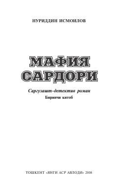

MSJinoiy olam va oilaviy nizolar haqidagi qiziqarli detektiv roman.
Ushbu asar yozuvchi Nuriddin Ismoilovning mashhur sarguzasht-detektiv romanlar turkumidan o'rin olgan. Kitobda jinoiy olam vakillari, oilaviy nizolar va insoniy qadriyatlarning tanazzuli haqida hikoya qilinadi.